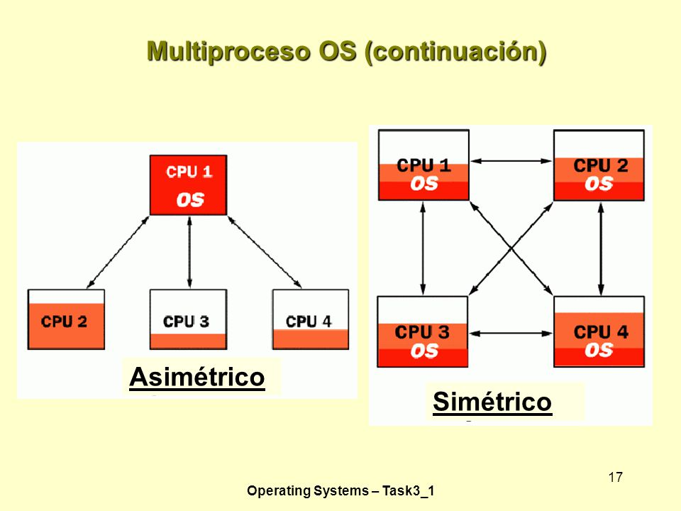

Multiprogramación y Multiproceso

| Carrera | Sistemas Computacionales |
|---|---|
| Materia | S.O |
Multiprogramación.
Ejecutar muchos programas al mismo tiempo. Cuando una tarea no puede utilizar el procesador, el sistema puede suspender o interrumpir, la tarea, liberando al procesador para trabajar en otra tarea. Cuando el programa se interrumpe listo para comenzar a ejecutar uno nuevo, se puede reanudar la ejecución justo donde lo dejó. |
|---|
Multiproceso.
Multiprocesamiento.- es el funcionamiento simultáneo de dos o más procesadores que comparten los recursos de hardware, como la memoria y los dispositivos externos de almacenamiento en disco |
 |
|---|
Multiprogramació y Multiproceso. Las técnicas de multiprogramación y multiprocesamiento es ideal para cargas de trabajo de procesamiento que requieren muchas de entrada y salida (E / S) para las operaciones. Típicas cargas de trabajo de mainframe incluyen aplicaciones de larga duración que escriben actualizaciones de millones de registros en una base de datos y aplicaciones en línea para miles de usuarios interactivos en un momento dado. “Muchos usuarios ejecutando muchos programas distintos medios que, junto con grandes cantidades de equipos complejos, z / OS necesita grandes cantidades de memoria para garantizar un rendimiento adecuado del sistema”. |
|---|
bilbiografia: http://identidadtecnologica.blogspot.com/2011/02/multiprocesamiento-y-la.html